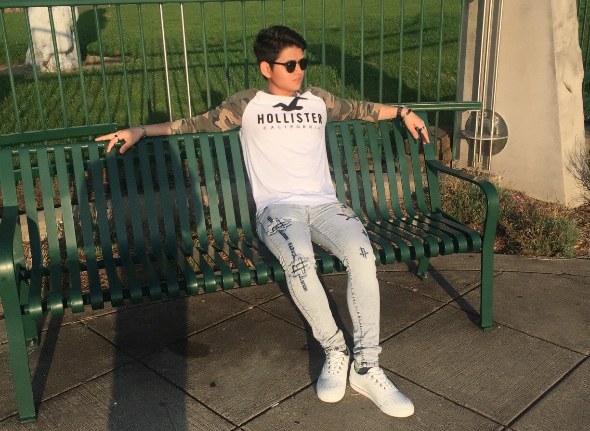
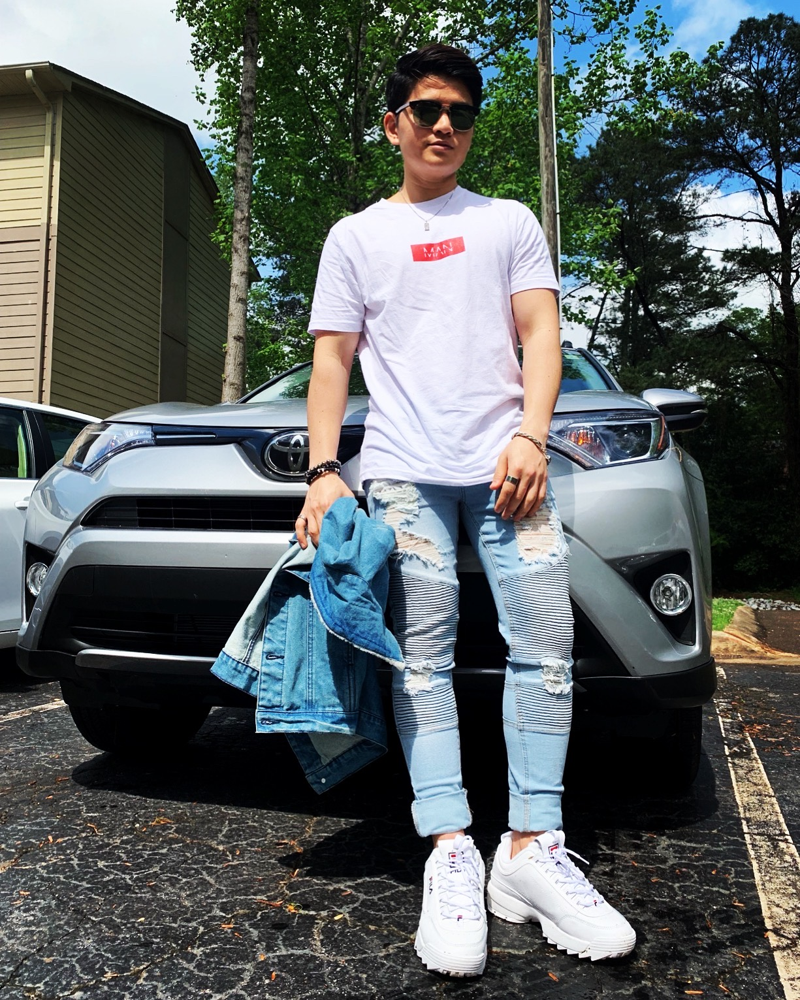

Hi there!
My name is Nai Sai Aung and I’m 22 years old. I was born and raised in Myanmar. I have one younger sister. I arrived in the United States on September 2016.
I was 20 years old when I arrived in the US. The International Rescue Committee (IRC) helped me resettle in Atlanta, GA. A month after I arrived, IRC help me to get into high school. They took me to the testing center where I took an ESL and math test and they enrolled me in 9th grade at Druid Hills High School. I felt I could do better than that, so after 2 weeks of going to high school I decided to drop out. I didn’t want to spend 4 years in high school to get a High School Diploma and I needed to help my parents. After I dropped out of high school, I took ESL evening classes to improve my English, and math practice classes on the weekend. I also worked part-time at Café Alsace in Decatur. On May 9th, 2017 I went to the Earle C. Clement Job Corp program in Morganfield, Kentucky. The next day I started Career Preparation Center (CPC) training for three weeks. I got a Customer Service certificate, a Basic Leadership Training certificate and a Basic Information Technology certificate from the CPC.
After three weeks, my schedule was reading and math class in the morning and trade in the evening. I worked hard for reading and math and I passed the math test with a 12.9 and a 5.6 for reading. In order to start high school, I had to have both math and reading at 5.6, so I qualified for high school and was enrolled in PennFoster High School. I went to my skill training (trade) every single evening. My first trade was Network Cabling Specialist. My teacher was Mr. Dustin Crook. He treats all students the same. He is friendly and never mean to anyone. I learned about satellites, how to make a Cat 5/6 cable and how to install it, OSHA 10 hours and how to make fiber optic cable. I was certified in C-Tech Telecommunication Technology, C-Tech & Leviton Copper, C-Tech Fiber Optic, OSHA 10 and Gastite Installation from the Network Cabling trade. I also finished all of the high school exams and got my high school diploma on December 2017. I came back to Georgia on winter break 2017 and went back to Earl C. Clement on January 2, 2018.
I started Computer Services Technician training as my second trade in February 2018. As first, it was hard for me because I knew nothing about computer hardware or software, but I worked hard, and I have a friend named Jordan Steven who was almost done with the class and had a lot of knowledge about computers. My teacher’s name was David Hayes, he always asked me, “How can I help you, Nai?” Some students said Mr. Hayes was mean to them, but for me he was a good teacher and perfect for the class. I also went to evening classes to get extra help. I was certified in IC3 GS5, CompTIA IT fundamentals and CompTIA A+ from the Computer Services Technician trade and completed it on September 19th, 2018.
After that I decided to take a third trade, Office Administration. My teachers were Ms. Jenny Stallins and Ms. Ryee. They are nice, friendly and always helpful to students. I took ten weeks to complete the trade and I was certified in OPAC, Effective Communication and Microsoft Office (Word, Excel and Power-Point).
I had a great time when I was in the Job Corp. I made a lot of friends from different states. I not only learned school materials, but I also learned about different people’s attitudes, knowledge, sexuality, foods, etc. I joined the soccer team and went to the gym after class. I was a Math tutor for other students. My tutoring teacher was Ms. Rachel Joyner and I always called her mom. We both liked K-Pop, K-Drama and Anime. There was an anime club and we watched an anime series every two weeks. They had a field trip every weekend and sometimes I went when I got bored or interested in doing something. I got along with all the people around me and never had a negative case note. I was a member of the Bronze Phase, Silver Phase, Gold Phase, and Platinum Phase. I also got an Advanced Leadership Training certificate and a Center Director Award when I graduated.
After spending one and half years at Job Corp, I got my high school diploma and three skills. I came back to Georgia on December 6th, 2018. I got a job at Tes-amm USA in Tucker, GA. My title is Inventory Specialist and I am responsible for taking inventory of the item, putting Windows on the system, and fixing, repairing or recycling electronic devices such as servers, network components, monitors, desktops, laptops, etc.
 I started the Refcode coding class in May 2019 at the Friends of Refugees Career Hub. The Center for Pan Asian Community Services (CPACS) provided me with the opportunity to start the coding class. My teachers are Kevin Glover and Carson
Covell. I also have teacher’s assistants (TA). Their names are Russell Koons and Dayren Tolliver and they are helping me to make this page as beautiful as you see now. I’ve learned about HTML, CSS and a little bit about JavaScript. My goal is
to become a Software Developer or Web Developer in the future. I always work hard to achieve my dreams and I know I will achieve that goal in the future.
I started the Refcode coding class in May 2019 at the Friends of Refugees Career Hub. The Center for Pan Asian Community Services (CPACS) provided me with the opportunity to start the coding class. My teachers are Kevin Glover and Carson
Covell. I also have teacher’s assistants (TA). Their names are Russell Koons and Dayren Tolliver and they are helping me to make this page as beautiful as you see now. I’ve learned about HTML, CSS and a little bit about JavaScript. My goal is
to become a Software Developer or Web Developer in the future. I always work hard to achieve my dreams and I know I will achieve that goal in the future.
Finally, thank you for reading the entire page and for your time. I would love to hear your feedback. Thanks again.